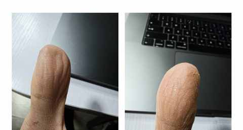
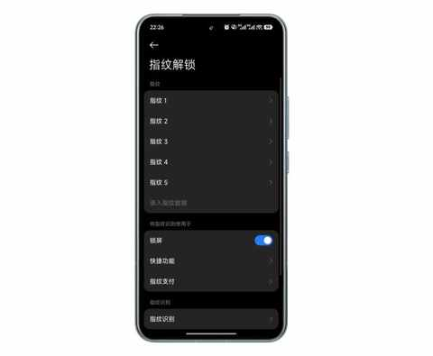

双持党的秋冬体验：当指纹识别频频失效，才懂得FaceID的好处
一、近期才有的烦恼
暑期的时候买的小米 15s Pro，到现在已经使用 4 个多月，用起来很是满意。
小米高端化成了吗？拿15S Pro当主力机4个月，我有这5个真实感受
不过，近期随着气温的下降和湿度的降低，由于自身的皮肤是偏干性的，手脚在秋冬季节都很容易皲裂，指纹识别总是失效。

日常使用倒还行，识别几次不成，大不了输入密码，但类似开车的出车库付费的场景则很尴尬，伴随着后面车辆的喇叭声，在指纹识别数字依然识别后，只能输入密码。
虽然是 双持党，但日常出门只带一部主力机： 小米 15s Pro，如果在秋冬季节再换回 iPhone 13做主力机，就有点太折腾了。
二、尝试的解决方法
出现这种影响体验的情况，自然需要想办法解决，目前采取的两个方式，都有一定作用，但都无法彻底解决问题。
1️⃣ 再次录入指纹
我把左边大拇指又重新录了一次，右边大拇指重新录了两次。

有一定效果，能降低识别不到的概率，每天的使用依然会需要多次输入密码。
2️⃣ 抹护手霜
毕竟手机的硬件已经无法改变了，只能改变能改变的，既然是皮肤干燥的原因，那就改变皮肤的干燥状态。
抹护手霜在没有洗手之前，都是有用的，识别概率提升明显，一旦洗过手之后，同时又没有再次抹护手霜，指纹识别就又不灵咯。
三、为什么安卓旗舰机没有类似 FaceID的功能
近些年 安卓旗舰机的价格，越来越高，基本都在 5000-7000元 的区间，摄影摄像方面持续进步，但解锁方案都是清一色的指纹识别，和1000-2000 元的安卓机无本质差别。
更准确的说，应该是为什么只有华为的几款手机和荣耀的几款手机，有 类似苹果Face ID 的 3D人脸识别功能。
把这个问题，发给Ai后，其给到的回答已足够全面：成本、生态、技术选择……
但有一个客观情况是，类似我这种皮肤特点的人，比例可能并不低，这部分用户在秋冬用手机的体验必然会打折扣。
四、指纹识别和 FaceID，全都要
使用 FaceID 或 3D 结构光来解锁手机的时候，唯一的缺点是必须目视手机，解锁的角度没有指纹多，毕竟指纹解锁是没有角度限制，更无需目视手机。
希望后续，能有更多的安卓旗舰机也能搭配 3D 结构光模块，从而让更多安卓用户能体验到这个功能便捷和好用。
近期文章
别再问我省多少油钱了！作为 8年新能源车主，我想说 ……
35岁的这个11月，我竟挑战了这么多“第一次”
日更，是不断了解自己的过程
90年，35岁，日更90天，有了这 3 个意外收获
听播客5年，日均108分钟：这3个收获，让我认识到“声音”的力量
小米高端化成了吗？拿15S Pro当主力机4个月，我有这5个真实感受
嘿！还记得“为QQ等级挂机”的岁月吗？来晒晒你的等级吧！
11 个月，开极氪7X跑两万公里，用车总结及好物分享
一个长居省外中年人的合肥印象：记2025的年第4次合肥行
中年减肥成功2年后，才发现运动形式真不重要，守住这3点